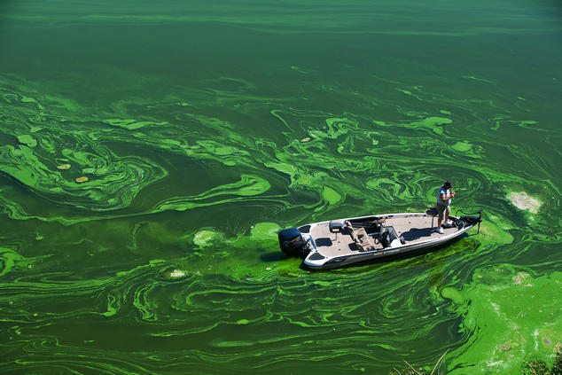

what is water pollution?
Water pollution occurs when harmful substances—often chemicals or microorganisms—contaminate a stream, river, lake, ocean, aquifer, or other body of water, degrading water quality and rendering it toxic to humans or the environment.
what are the causes of water pollution?
Water is uniquely vulnerable to pollution. Known as a “universal solvent,” water is able to dissolve more substances than any other liquid on earth. It's the reason we have Kool-Aid and brilliant blue waterfalls. It's also why water is so easily polluted. Toxic substances from farms, towns, and factories readily dissolve into and mix with it, causing water pollution.
Types of water pollution
Groundwater
When rain falls and seeps deep into the earth, filling the cracks, crevices, and porous spaces of an aquifer (basically an underground storehouse of water), it becomes groundwater—one of our least visible but most important natural resources. Nearly 40 percent of Americans rely on groundwater, pumped to the earth's surface, for drinking water. For some folks in rural areas, it's their only freshwater source. Groundwater gets polluted when contaminants—from pesticides and fertilizers to waste leached from landfills and septic systems—make their way into an aquifer, rendering it unsafe for human use. Ridding groundwater of contaminants can be difficult to impossible, as well as costly. Once polluted, an aquifer may be unusable for decades, or even thousands of years. Groundwater can also spread contamination far from the original polluting source as it seeps into streams, lakes, and oceans.
Ocean water
Eighty percent of ocean pollution (also called marine pollution) originates on land—whether along the coast or far inland. Contaminants such as chemicals, nutrients, and heavy metals are carried from farms, factories, and cities by streams and rivers into our bays and estuaries; from there they travel out to sea. Meanwhile, marine debris—particularly plastic—is blown in by the wind or washed in via storm drains and sewers. Our seas are also sometimes spoiled by oil spills and leaks—big and small—and are consistently soaking up carbon pollution from the air. The ocean absorbs as much as a quarter of man-made carbon emissions.
the most common types of water contamination
Agricultural
Not only is the agricultural sector the biggest consumer of global freshwater resources, with farming and livestock production using about 70 percent of the earth's surface water supplies, but it's also a serious water polluter. Around the world, agriculture is the leading cause of water degradation. In the United States, agricultural pollution is the top source of contamination in rivers and streams, the second-biggest source in wetlands, and the third main source in lakes. It's also a major contributor of contamination to estuaries and groundwater. Every time it rains, fertilizers, pesticides, and animal waste from farms and livestock operations wash nutrients and pathogens—such bacteria and viruses—into our waterways. Nutrient pollution, caused by excess nitrogen and phosphorus in water or air, is the number-one threat to water quality worldwide and can cause algal blooms, a toxic soup of blue-green algae that can be harmful to people and wildlife.
Oil pollution
Big spills may dominate headlines, but consumers account for the vast majority of oil pollution in our seas, including oil and gasoline that drips from millions of cars and trucks every day. Moreover, nearly half of the estimated 1 million tons of oil that makes its way into marine environments each year comes not from tanker spills but from land-based sources such as factories, farms, and cities. At sea, tanker spills account for about 10 percent of the oil in waters around the world, while regular operations of the shipping industry—through both legal and illegal discharges—contribute about one-third. Oil is also naturally released from under the ocean floor through fractures known as seeps.
What are the effect of water pollution
On human Health
To put it bluntly: Water pollution kills. In fact, it caused 1.8 million deaths in 2015, according to a study published in The Lancet. Contaminated water can also make you ill. Every year, unsafe water sickens about 1 billion people. And low-income communities are disproportionately at risk because their homes are often closest to the most polluting industries.
Waterborne pathogens, in the form of disease-causing bacteria and viruses from human and animal waste, are a major cause of illness from contaminated drinking water. Diseases spread by unsafe water include cholera, giardia, and typhoid. Even in wealthy nations, accidental or illegal releases from sewage treatment facilities, as well as runoff from farms and urban areas, contribute harmful pathogens to waterways. Thousands of people across the United States are sickened every year by Legionnaires' disease (a severe form of pneumonia contracted from water sources like cooling towers and piped water), with cases cropping up from California's Disneyland to Manhattan's Upper East Side.
what can you do to prevent water pollution?
With your actions
- Learn about the unique qualities of water where you live. Where does your water come from? Is the wastewater from your home treated? Where does stormwater flow to? Is your area in a drought? Start building a picture of the situation so you can discover where your actions will have the most impact—and see if your neighbors would be interested in joining in!
- Reduce your plastic consumption and reuse or recycle plastic when you can.
- Properly dispose of chemical cleaners, oils, and nonbiodegradable items to keep them from going down the drain.
- Maintain your car so it doesn't leak oil, antifreeze, or coolant.
- If you have a yard, consider landscaping that reduces runoff and avoid applying pesticides and herbicides.
- Don't flush your old medications! Dispose of them in the trash to prevent them from entering local waterways.
- Be mindful of anything you pour into storm sewers, since that waste often won't be treated before being released into local waterways. If you notice a storm sewer blocked by litter, clean it up to keep that trash out of the water. (You'll also help prevent troublesome street floods in a heavy storm.)
- If you have a pup, be sure to pick up its poop.